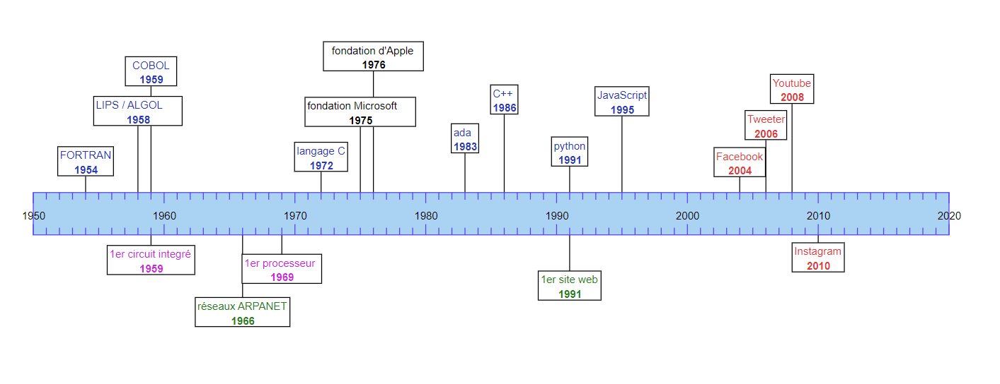

Histoire de l'informatique
Les racines de l'informatique
Premiers algorithmes
Les premiers algorithmes dates de l'antiquité. Ils décrivent des méthodes pour résoudre certains problèmes comme les équations du second degré.
les machines automatiques
Un robot est une machine qui peut effectuer une tache précise de façon automatique.
Les premiers automates sont conçus par Jacques de Vaucanson (1709- 1782).
Ils permettent d'animer des animaux comme des canards.
Il est aussi à l'origine du métier à tisser de Vaucanson qui
est totalement automatisé grâce a des cartes perforé qui lui permettent de recevoir des
instructions.
L’utilisation des cartes perforées ne s'est pas limité au machine à tisser.
Certains scientifiques on conceptualiser des ordinateurs marchant à partir de ces cartes perforer
comme le scientifique britannique Charles Babbage. C'est sur ce concept d'ordinateur
a cartes perforée que Ada Lovelace créa le premier programme informatique en 1842.
Cependant, le projet de Babbage ne vit jamais le jour et le programme ne put être utiliser.
L’émergence de l'informatique
Alan Turing
Alan Turing est un mathématicien et cryptologue britannique. Il est notamment celui qui, grâce a ces travaux, a fondé scientifiquement l'informatique. Il est notamment connu pour avoir réussi a "casser" le code enigma qui permettant aux allemend lors de la seconde guerre mondiale de chiffrer leur message. Après la seconde guerre mondial, il développa le test de Turing qui permet de déterminer "l’intelligence de la machine"

Le développement de l'informatique
A partir de 1950, l'informatique ce développe fortement et souvre a un usage publique. Ce développement et du au développement des langages de programmation ainsi que de l'invention des microprocesseurs et des circuit intégrés.
Les premier langages de programmations
Au début de l'informatique, les premiers ordinateurs étaient coder
en langages de très bas niveau (proche du langage machine) comme l'assembleur.
D'autres langages se sont ensuite développés afin de pouvoir comprendre
plus facilement le code, c'est un langages de plus haut niveau.
Ces langages apparaissent a partir de 1950 tel que:
- FORTAN (mathematical FORmula TRANslating system) en 1954
- LISP (LISte Processor) en 1958
- ALGOL en 1958: base de développement de certains langages importants comme C, C++, java ou pascal
- COBOL(Common Bisness Oriented Language) en 1959
A partir de ces langages, d'autres ce sont formés dont la plus part sont encore utilisé aujourd'hui et/ou la base de nouveau langages. Il y a:
- C (1972)
- ada (1983) : dont le nom est inspirer de Ada Lovelace
- C++ (1986)
- python (1991)
- JavaScript (1995)
Les circuit intégrés et les microprocesseurs
En 1959, Jack Kilby dépose le brevet du premièr circuit intégré. Cela permis la production en masse de petit composant informatique et a value a Kilby le prix Nobel de physique en 2000. Le microprocesseurs a ensuite été inventé en 1969 par Intel pour le compte d'un fabriquant de calculatrice japonais. Il a permis de minimiser la tailler des ordinateurs.
L’extension de l'informatique (1975-1990)
Dans les année 1970, de nouveaux ordinateurs apparaissent munit de
clavier et d’écran. Ils se généralisent dans de très nombreux domaine
comme la bureautique, l'imprimerie... Les systèmes d'exploitations se développes
et permettent le développement de logiciels.
Suite a l’accessibilité de ces nouvelles technologie pour le grand
publique de nouvelle entreprises se démarquent comme Apple fondé en 1976
par Steve Jobs ou Microsoft fondé en 1975 par Bill Gattes qui développeront
les premiers systèmes d'exploitation grand publique comme MS-DOS.
L'explosion des réseaux
Internet
Les premier réseaux sont crée afin de connecter différent ordinateurs
entre eux. L'un des premiers réseaux qui fut une base d'internet est le
réseaux ARPANET, en 1966, qui reliait différentes universités au états unis.
Suite a ces réseaux qui était sur une échelle relativement local Internet
s'est développé en un réseaux planétaire. Cela s'est fait pour l'unification
des protocoles avec les protocoles TCP/IP en 1977 qui fut adopter vers 1983.
A partir de 1989, internet compte plus de 100 000 ordinateur sont interconnectée et en 1991
Tim berners-lee annonce le Word Wide Web et publier le premier site web.
Les réseaux sociaux
Les réseaux sociaux apparaissent a partir des années 2000. Internet passe d'un web statique
on l'on ne peux que regarder un contenu (Web 1.0) a un web social on on peux interagir avec
différents
personne grâce au réseaux sociaux, c'est le web 2.0.
différents réseaux sociaux se sont développés:
- MySpace (2003)
- Facebook (2004) fondé par Mark Zuckerberg
- Twitter (2006)
- LinkedIn (2006)
- Youtube (2008)
- Instagram (2010)
- Snapchat (2011)
Future technologies
L’intelligence artificiel
L'une des branche de l'informatique qui pourrais être très important dans le future est
l’Intelligence
Artificiel(IA). L'IA a pour but de simuler l’intelligence humaine a partir d'un programme
informatique.
L’intelligence artificiel utiliser des algorithmes d’apprentissages (Machine learning) afin que l'IA
puisse
faire des chose qui ne sont pas coder explicitement dans le programme grâce a l’apprentissage.
Dans le machine learning il y a une sous catégorie d’intelligence artificiel appeler Deep
learning
cette technique s'appuis notamment sur l’utilisation de réseaux de neurone qui en fonctionnant par
millier permettent
de simuler l’intelligence.
L’intelligence artificiel est utilisée dans des domaine comme:
- la reconnaissance d'image
- La médecine
- La finance
- La traduction
- etc...
Cette technologie est très prometteuse même si elle en est qu'a ces début. En effet l’intelligence
crée est très loin de
l’intelligence humaine cependant elle fait peur a certaines personnes qui pensent que ces
intelligence artificielles peuvent
finir hors de contrôle.
La blockchain
La technologie de la blockchain fut proposer pour la première fois par le cryptographe David Chaum
en 1982.
C'est une technologies de stockage de donnée qui n'est lier a aucune autorité central. Les donnée
intégrées a la bloc chaîne sont vérifier et grouper par intervalle de temps sous forme de bloc ce
qui forme au
totale une chaine de bloc qui est publique a tout les membres du réseaux. Ces donnée sont sécuriser
par
cryptographie qui rend presque impossible de modifier des donner a l’intérieur de la blockchain.
Cette technologie est très utiliser dans le domaine des cryptomonnaies comme le Bitcoin ou
l'Ethereum en effet
cela permet a ces monnaies de ne pas dépendre d'une autorité central comme une banque central et de
rendre presque
impossible la fraude car il faudrait une capacité de calcule énorme pour passer la sécurité de la
blockchain.